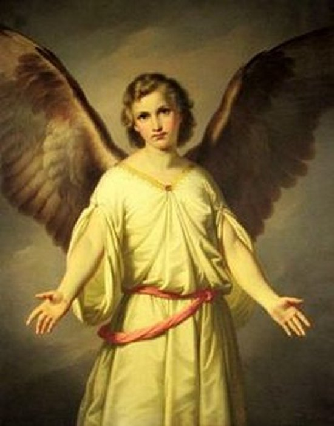

"ARCANJO SÃO GABRIEL"

"FORÇA DE DEUS"
São Gabriel constitui um registro de significativa importância
no Mistério do FILHO DE DEUS,
que se fez Homem para a nossa Salvação.
=ÍNDICE=
MENSAGEIRO DAS BOAS NOTÍCIAS
ADMIRÁVEL INTERCESSOR
CULTO E PATRONATO
FOTOGRAFIAS + MENSAGENS + E-MAIL